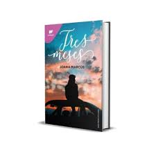
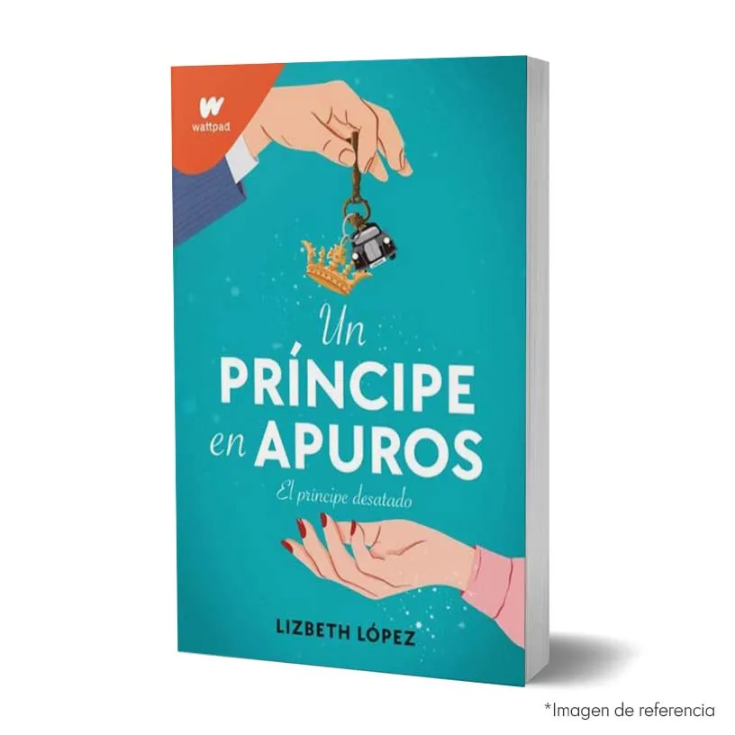

El chico de arriba
1,250

Una perfecta equivocación
1,250

Heist
1,300

Fleur
1,350
Sigue mi voz
1,300

Antes de diciembre
1,250

Después de diciembre
1,250

Tres meses
1,250

Boulevard
1,250

Culpa mía
1,150

Culpa tuya
1,150

Culpa nuestra
1,150

Perfectos mentirosos 1
1,300

Perfectos mentirosos 2
1,250

Perfectos mentirosos (pack)
2,450

Damian
1,550

Un principe en apuros
1,350

A través de mi ventana
1,300

A través de ti
1,250

A través de la lluvia
1,300

Saga After
4,450

Crueles instintos
1,550

Etéreo
1,400
No te enamores de nika
1,250
No te enamores de mia
1,300

El rey oscuro
1,200

Belleza oscura
1,300

Lascivia
2,500

Lujuria
2,550

Culpables (pack)